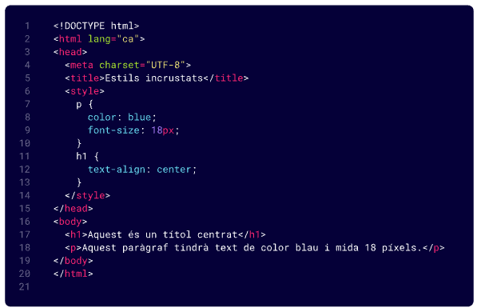
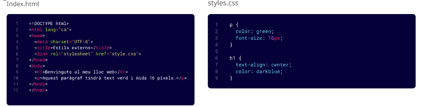

El CSS es pot aplicar a un document HTML de tres maneres principals: en línia, incrustat (dins de l'HTML) i extern (mitjançant un fitxer CSS separat). Cadascuna d’aquestes formes té els seus propòsits i usos.
Estils en línia (Inline Styles)
Els estils en línia s'apliquen directament a un element HTML, utilitzant l'atribut style dins de la mateixa etiqueta de l'element. Aquest mètode és adequat per a aplicar estils a un sol element de manera ràpida, però no és recomanable per a pàgines grans, ja que dificulta la mantenibilitat.
Exemple: <"p style="color: red; font-size: 20px;">Aquest és un paràgraf amb estils en línia<"/p">
Aquest paràgraf és de color vermell.
Estils incrustats (Embedded styles)
Els estils incrustats es col·loquen dins de la secció <"head"> d’un document HTML, dins d’una etiqueta <"style">. Aquests estils s'apliquen a tots els elements HTML de la pàgina actual.
Exemple visual d'estils incrustats:

Estils externs (External stylesheets)
Els estils externs s’emmagatzemen en un fitxer CSS separat, i s’enllacen al document HTML utilitzant l'etiqueta <"link"> dins de la secció <"head">. Aquest és el mètode més recomanat per a la majoria de llocs webs, especialment si consten de múltiples pàgines.
Exemple viusal d'estils externs
